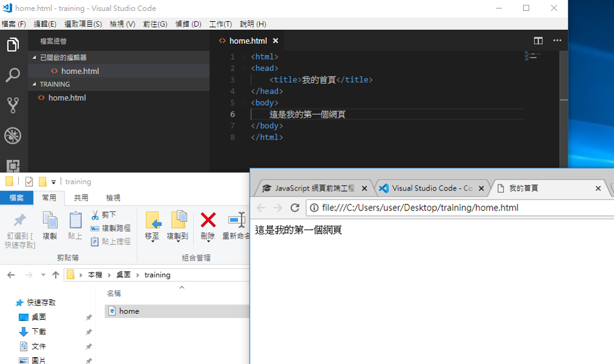

<!--關於換行
1. 程式碼中的換行不重要
2. 注意標籤的顯示模式 (dispaly)
    2.1 區塊模式 (block) - 產生換行效果
    2.2 行內模式 (inline)
3. 隨時可以使用<br/>or<br>強制換行 -空白的區塊模式標籤，純做換行，沒有任何功能
-->

<!--告訴瀏覽器我現在寫的是html-->
<DOCKTYPE html>

<!--0.0-->
<html>
    <head>
        <meta charset="utf-8"><!--告訴瀏覽器我使用的編碼是utf-8-->
        <title>我的首頁</title>
    </head>
    <!-- 字體:粗體、斜線、底線-->
    <body> 
        <h3>這是<u>我的第<br/>一個<i>網頁</i></u></h3>
    <!-- 超連結-->
    <a href="https://www.google.com" target="blank">Google</a>

     <!--放圖片-->
    
    

    <hr><!--畫水平線-->
        
    <h3>我的最愛</h3>
    <!-- 有序列表，e.g. 1、2、3-->
    <ol>
        <li>Coffee</li>
        <li>Tea</li>
    </ol>

    <!-- 無序列表，只有圈圈-->
    <ul>
        <li>Google</li>
        <li><a href="https://www.facebook.com" target="blank">Facebook</a></li>
    </ul>

    <!-- 畫表格-->
    <table border = "1" width = "250" cellpadding = "5" cellspacing="10" style="background-color: aqua">
        <tr>
            <td rowspan="5">321</td>
            <td colspan="2">Browser</td>
            <td rowspan="5">123</td>
        </tr>
        <tr>
            <th>瀏覽器</th>
            <th>市佔率</th>
        </tr>
        <tr>
            <td>Chrome</td>
            <td>70</td>
        </tr>
        <tr>
            <td>Safari</td>
            <td>15</td>
        </tr>
        <tr>
            <td>Firefox</td>
            <td>15</td>
        </tr>
        <p>瀏覽器市調率</p>
    </table>

    </body>
</html>